Voici les plus beaux ouvrages sur Concorde :
Concorde - 1996 - Michel Polacco - Cherche midi - 32x25 93p 
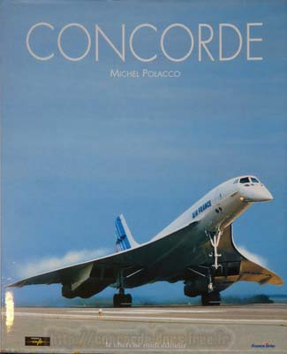 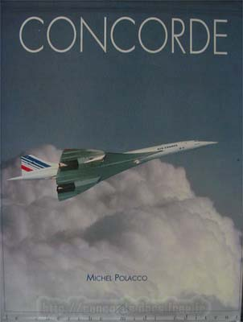
Bel ouvrage avec beaucoup de photos, retraçant la carrière de Concorde.
Cependant, pas de grandes nouveautés. Présenté ici en 2 éditions.
Concorde la véritable histoire - 1973 - Pierre Sparaco - Docavia - 207p 
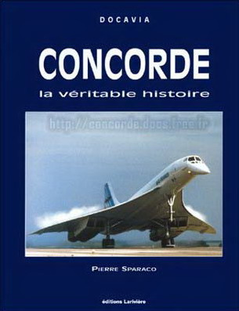 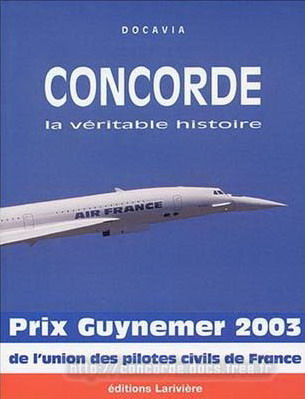 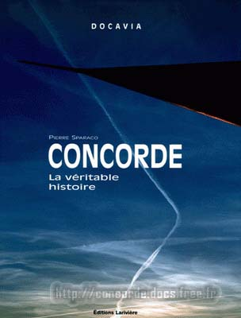
Bel ouvrage bien illustré, du même type que celui de M. Polacco (ci-dessus), mais plus complet.
Auteur de référence en aéronautique, Pierre Sparaco a reçu le prix Guynemer pour ce livre.
Présenté ici en 3 éditions : l'originale de 1973, celle de 2002 et la dernière de 2006.
Un ciel signé Concorde - 2005 - Edouard Chemel - Seven sept - 29x23 55p 
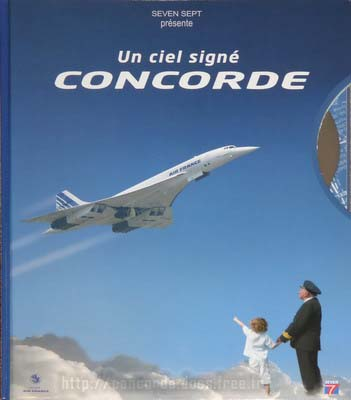
Livré avec un DVD, cet ouvrage raconte la carrière des Concordes chez Air France,
vu par le commandant de bord Edouard Chemel. Beaucoup de photos.
La vie du Concorde F-BVFB - 2004 - Edouard Chemel - Cherche midi - 29x23 62p 
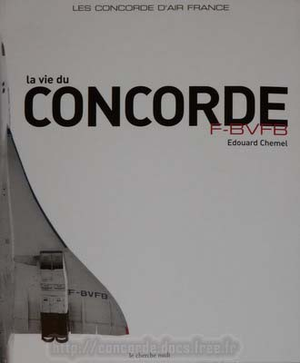
Toujours du commandant Chemel, toute l'ambiance de travail à bord et autour du 7ème Concorde de série.
Un témoignage unique de la vie des équipages Air France sur Concorde. Plétore de photos.
Concorde - 2005 - Frédéric Beniada & M. Fraile -EPA- 41x28 183p 
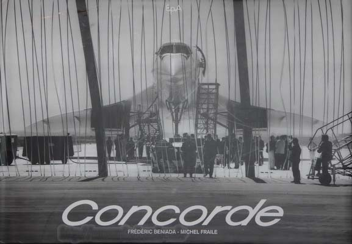
Un beau livre de grand format, rassemblant les plus belles photos de Concorde. Indispensable.
Concorde la légende volante - 2002 - Alain Ernoult - Du May - 33x28 192p 
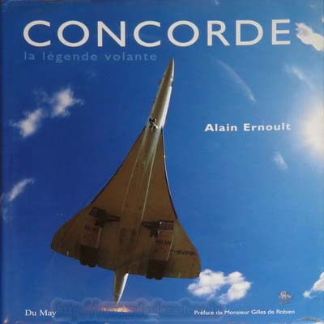
Un livre de grand format réunissant de très nombreuses photos de Concorde,
avec à mon gout un niveau assez inconstant de la qualité des clichés.
Concorde le magnifique - 2008 - Yves Marc - Privat - 32x25 141p 
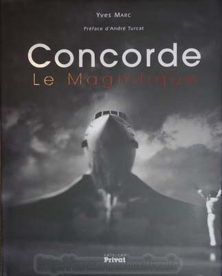
Beau livre avec peu de texte mais contenant beaucoup de photos. Sans grandes nouveautés,
mais avec de belles et nombreuses photos non vues dans d'autres ouvrages.
Concorde Passion - 2009 - Jean-Philippe Lemaire & Xavier Dergel - LBM - 29x25 192p 
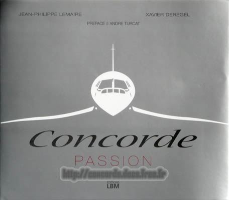
Un beau livre de grand format, en Français et en Anglais.
La qualité et le nombre de photos fait la force de ce magnifique ouvrage.
Concorde - 2009 - Stephen Skinner - Midland publishing- 29x21 144p 

Un autre livre contenant de magnifiques photos du bel oiseau blanc.